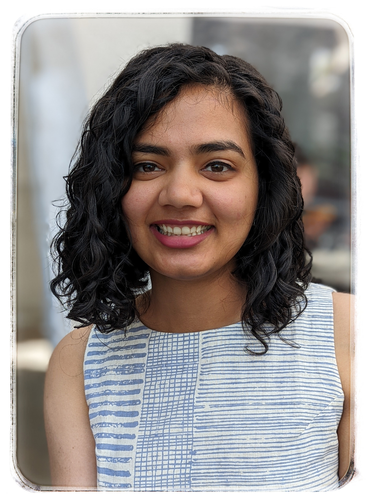

Chinmayee Athalye


About
I am a second year Bionegineering PhD student in the Penn Image Computing and Science Lab (PICSL) at University of Pennsylvania advised by Paul Yushkevich. Before this I worked as a Data Scientist with the Arnaout Lab at UCSF. I graduated with a Master's in Computer Science from University of California Irvine where I worked with Charless Fowlkess and Shu Kong. I received my Bachelor's in Electronics & Telecommunication Engineering from College of Engineering Pune in India.
Research
My research interests are in Medical Imaging, Computer Vision and Machine Learning. I am currently working on image registration problems for Alzheimer's Disease Research.